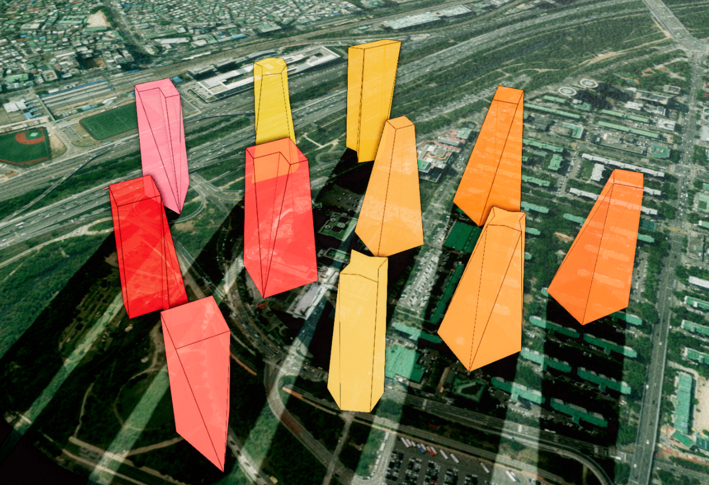
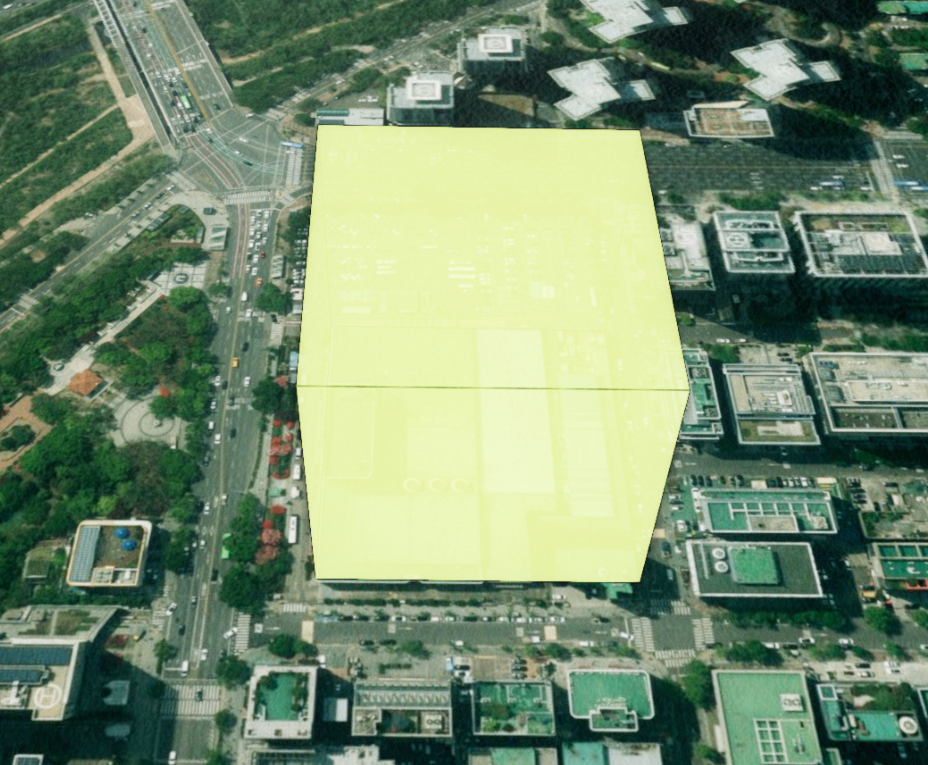
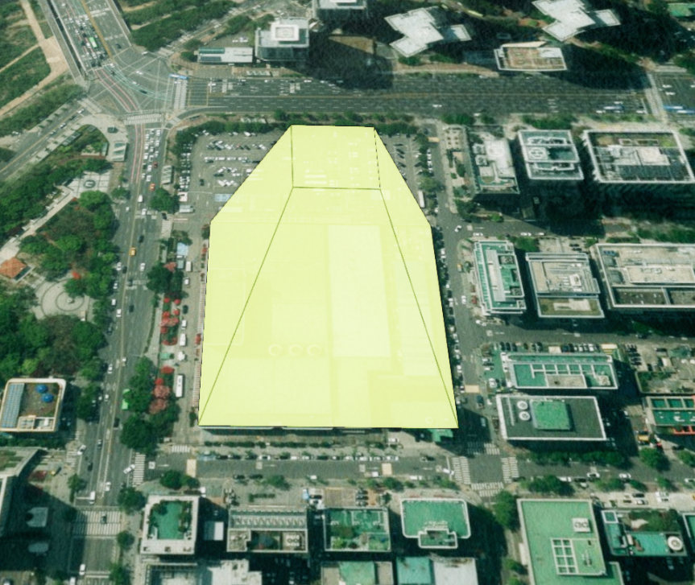
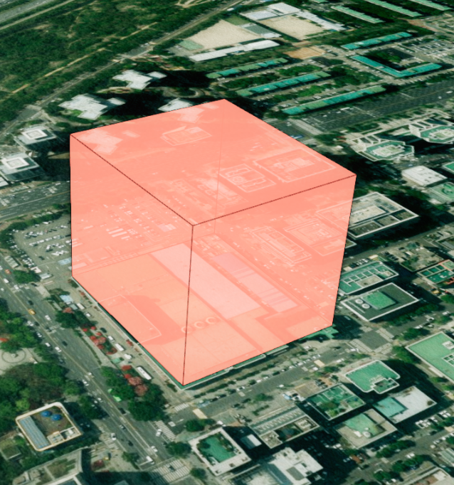
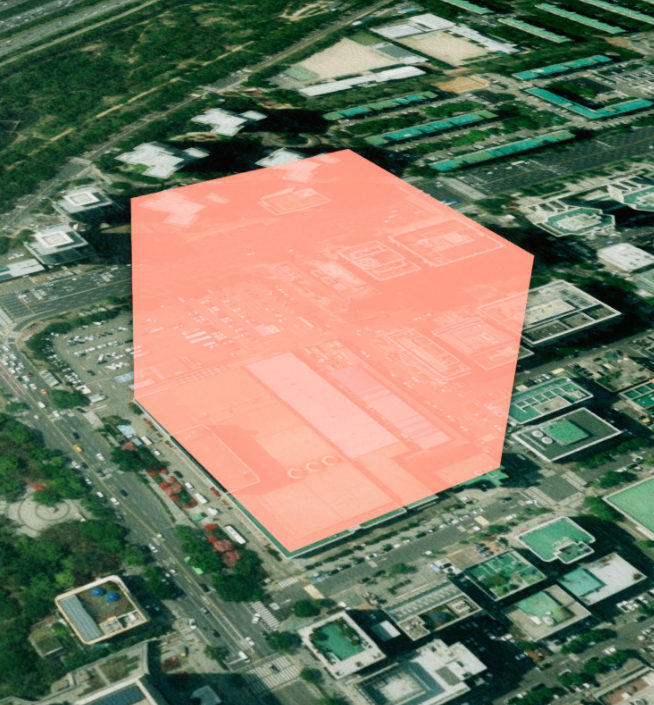

폴리곤 Loft 객체
목차
폴리곤 Loft 객체는 바닥면 다각형과 윗면 다각형을 측면으로 이어 붙여 입체 형상을 만드는 객체입니다. 사각형 바닥에서 위로 좁아지는 굴뚝, 아래로 넓어지는 깔때기처럼 위아래 단면이 다른 형상을 표현할 때 사용합니다.
- 바닥면(bottom): 형상의 기준이 되는 다각형입니다.
vertices로 지정하며 정점이 세 개 이상이어야 합니다.- 윗면(top): 바닥면에서
height만큼 올라간 위치의 다각형입니다. 따로 지정하지 않으면 바닥면을topScale비율로 축소·확대한 모양이 쓰입니다.- 측면(side): 바닥면과 윗면의 정점을 이어 만든 면입니다. 두 다각형의 정점 수가 달라도 자동으로 연결됩니다.
1. Loft 객체 생성하기
U3dPolygonLoftGeometry 생성자로 객체를 만들고, U3dVectorLayer.addGeometry로 레이어에 등록하면 화면에 표시됩니다.
레이어를 만들고 도형을 등록·제거하는 방법은 3D Geometry 시작하기 - 도형 등록하고 제거하기에서 설명합니다.
vertices는 바닥면을 구성하는 정점 배열이며 최소 세 개 이상의 월드 좌표가 필요합니다. 위경도 좌표는 app.getGeographicToWorld로 월드 좌표로 변환해 넣습니다.
API
U3dPolygonLoftGeometry(opt) : Loft 폴리곤 객체를 생성하는 생성자
매개변수
opt(object) : Loft 폴리곤 생성 옵션opt.name(string) : 객체 이름opt.vertices(Array<WorldPositionVector3>) : 바닥면 정점 배열 (월드 좌표, EPSG:3857). 정점 3개 이상. 필수opt.height(number) : 바닥면에서 윗면까지의 높이. 기본값:100opt.topScale(number) : 윗면 크기 비율.topVertices를 지정하면 무시됩니다. 기본값:1opt.topVertices(Array<WorldPositionVector3>) : 윗면 정점 배열 (월드 좌표, EPSG:3857)opt.color(ColorRepresentation) : 객체 색상. 기본값:0xff0000opt.opacity(number) : 객체 투명도(0~1). 기본값:0.7opt.useLine(boolean) : 외곽선 표시 여부. 기본값:trueopt.lineColor(ColorRepresentation) : 외곽선 색상. 기본값:'#000000'opt.properties(KeyValue) : 객체 속성정보
1. Loft 객체 생성 예제
사각형 바닥에서 위로 좁아지는 형상을 만드는 예제입니다.
const app = new GeOnDT.U3dAPP({containername: 'map'});
const vectorLayer = new GeOnDT.vector.U3dVectorLayer({name: 'vector'});
const center = app.getGeographicToWorld(126.9393, 37.5194, 0);
const vertices = [
new THREE.Vector3(center.x - 40, center.y - 30, center.z),
new THREE.Vector3(center.x + 40, center.y - 30, center.z),
new THREE.Vector3(center.x + 40, center.y + 30, center.z),
new THREE.Vector3(center.x - 40, center.y + 30, center.z)
];
const polygonLoft = new GeOnDT.geom.U3dPolygonLoftGeometry({
name: 'polygon_loft_01',
vertices: vertices,
height: 120,
topScale: 0.6, // 윗면을 바닥면의 60% 크기로
color: '#ff6b2d',
opacity: 0.75,
useLine: true,
properties: {'용도': '폴리곤 Loft 객체'}
});
vectorLayer.addGeometry(polygonLoft);
2. 생성 결과

2. 높이와 윗면 크기 변경하기
생성한 뒤에도 높이와 윗면 크기를 바꿀 수 있습니다. setHeight는 바닥면에서 윗면까지의 높이를, setTopScale은 바닥면 중심을 기준으로 한 윗면의 크기 비율을 변경합니다.
topScale은 0보다 큰 숫자여야 합니다. 1보다 작으면 위로 좁아지고, 1보다 크면 위로 넓어집니다. 범위를 벗어난 값이나 숫자가 아닌 값은 적용되지 않고 오류 메시지가 출력됩니다.
여러 속성을 함께 바꿀 때는 setParam으로 한 번에 전달하면 형상이 한 번만 다시 계산됩니다.
API
U3dPolygonLoftGeometry.setHeight(height) : 객체의 높이를 설정하는 함수
매개변수
height(number) : 바닥면에서 윗면까지의 높이. 0 이상
API
U3dPolygonLoftGeometry.setTopScale(topScale) : 윗면 크기 비율을 설정하는 함수
매개변수
topScale(number) : 윗면 크기 비율. 0보다 큰 값
API
U3dPolygonLoftGeometry.setParam(param) : 여러 속성을 한 번에 갱신하는 함수
매개변수
param(object) : 변경할 속성 객체param.color(ColorRepresentation) : 객체 색상param.opacity(number) : 객체 투명도(0~1)param.height(number) : 객체 높이. 0 이상param.topScale(number) : 윗면 크기 비율. 0보다 큰 값param.topVertices(Array<WorldPositionVector3>) : 윗면 정점 배열param.useLine(boolean) : 외곽선 표시 여부param.lineColor(ColorRepresentation) : 외곽선 색상
API
U3dPolygonLoftGeometry.getParam() : 현재 속성을 반환하는 함수
반환값
return(object) : 색상·투명도·높이·윗면 비율·윗면 정점·외곽선 등 현재 속성 객체
1. 높이와 윗면 비율 변경 예제
const polygonLoft = vectorLayer.getGeometryByName('polygon_loft_01');
polygonLoft.setHeight(200); // 높이 변경
polygonLoft.setTopScale(0.35); // 윗면 크기 비율 변경
// 여러 속성을 한 번에 변경
polygonLoft.setParam({
height: 160,
topScale: 0.8,
color: '#fb923c',
opacity: 0.65,
useLine: true
});
height와 topScale은 getter로도 바로 읽을 수 있습니다.
console.log(polygonLoft.height); // 160
console.log(polygonLoft.topScale); // 0.8
2. 윗면 비율에 따른 차이
같은 바닥면에 topScale만 다르게 적용한 결과입니다.


3. 윗면 정점 직접 지정하기
윗면을 바닥면과 다른 모양으로 만들려면 생성 옵션의 topVertices 또는 setTopVertex를 사용합니다. 윗면 정점을 직접 지정하면 topScale은 무시되고, 전달한 윗면 다각형을 기준으로 측면이 연결됩니다.
윗면 정점도 최소 세 개 이상의 월드 좌표여야 합니다. 바닥면과 정점 수가 달라도 되며, 측면은 두 다각형을 잇는 경로가 자동으로 계산됩니다.
윗면 정점의 높이(z)는 좌표에 포함된 값이 그대로 쓰이므로, 원하는 높이의 월드 좌표를 만들어 전달합니다.
API
U3dPolygonLoftGeometry.setTopVertex(vertex) : 윗면 정점 배열을 설정하는 함수
매개변수
vertex(Array<WorldPositionVector3>) : 윗면을 구성할 정점 배열 (월드 좌표, EPSG:3857). 정점 3개 이상
API
U3dPolygonLoftGeometry.getTopVertex() : 지정된 윗면 정점 배열을 반환하는 함수
반환값
return(Array<WorldPositionVector3> | undefined) : 윗면 정점 배열의 복사본. 직접 지정한 윗면이 없으면undefined
1. 윗면 정점 지정 예제
바닥면은 사각형, 윗면은 마름모 형태로 지정하는 예제입니다.
const polygonLoft = vectorLayer.getGeometryByName('polygon_loft_01');
const center = app.getGeographicToWorld(126.9393, 37.5194, 180);
// 바닥면은 사각형, 윗면은 마름모 형태로 지정합니다.
const topVertices = [
new THREE.Vector3(center.x, center.y + 25, center.z),
new THREE.Vector3(center.x + 25, center.y, center.z),
new THREE.Vector3(center.x, center.y - 25, center.z),
new THREE.Vector3(center.x - 25, center.y, center.z)
];
polygonLoft.setTopVertex(topVertices);
// 반환값은 복사본이므로 수정해도 원본 형상에는 영향이 없습니다.
const currentTopVertices = polygonLoft.getTopVertex();
console.log(currentTopVertices);
4. 외곽선 표시하기
입체 형상의 경계를 뚜렷하게 보이려면 외곽선을 함께 표시합니다. 생성 옵션 useLine으로 초기 상태를 정하고, 생성 후에는 setUseLine으로 켜거나 끕니다.
외곽선 색상은 생성 옵션 lineColor 또는 setLineColor로 지정합니다. 외곽선이 꺼져 있는 상태에서는 색상만 바꿔도 화면에 나타나지 않으므로, setUseLine(true)로 함께 켜야 합니다.
API
U3dPolygonLoftGeometry.setUseLine(useLine) : 외곽선 표시 여부를 설정하는 함수
매개변수
useLine(boolean) :true면 외곽선 표시,false면 외곽선 제거
API
U3dPolygonLoftGeometry.setLineColor(lineColor) : 외곽선 색상을 설정하는 함수
매개변수
lineColor(ColorRepresentation) : 외곽선 색상
1. 외곽선 제어 예제
const polygonLoft = vectorLayer.getGeometryByName('polygon_loft_01');
polygonLoft.setUseLine(false); // 외곽선 제거
polygonLoft.setUseLine(true); // 외곽선 표시
polygonLoft.setLineColor('#ffffff'); // 외곽선 색상 변경
2. 외곽선 표시 여부에 따른 차이


5. 면적 조회하기
바닥면과 윗면의 면적을 제곱미터 단위로 조회할 수 있습니다. 부지 면적이나 상부 단면적을 함께 표시해야 할 때 사용합니다.
윗면 면적은 topVertices를 지정한 경우 그 다각형의 실제 면적을, 지정하지 않은 경우 바닥면 면적에 topScale의 제곱을 곱한 값을 돌려줍니다.
계산에 사용된 정점 배열이 필요하면 getBottomSlice, getTopSlice로 복사본을 받을 수 있습니다.
API
U3dPolygonLoftGeometry.getBottomArea() : 바닥면의 면적을 반환하는 함수
반환값
return(number) : 바닥면 면적(m²). 정점이 3개 미만이면0
API
U3dPolygonLoftGeometry.getTopArea() : 윗면의 면적을 반환하는 함수
반환값
return(number) : 윗면 면적(m²)
API
U3dPolygonLoftGeometry.getBottomSlice() : 계산된 바닥면 정점 배열을 반환하는 함수
반환값
return(Array<WorldPositionVector3>) : 바닥면 정점 배열의 복사본 (월드 좌표)
API
U3dPolygonLoftGeometry.getTopSlice() : 계산된 윗면 정점 배열을 반환하는 함수
반환값
return(Array<WorldPositionVector3>) : 윗면 정점 배열의 복사본 (월드 좌표)
1. 면적 조회 예제
const polygonLoft = vectorLayer.getGeometryByName('polygon_loft_01');
console.log('바닥 면적 :', polygonLoft.getBottomArea(), 'm²');
console.log('윗면 면적 :', polygonLoft.getTopArea(), 'm²');
// 계산에 사용된 정점 확인
console.log(polygonLoft.getBottomSlice());
console.log(polygonLoft.getTopSlice());